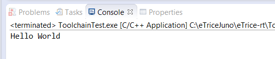

To verify the C tool chain you should generate and run the Hello World example program of the CDT. Activate the C/C++ perspective.
From the main menu select File->New->C Project.

Name the project. Select an Executable->Hello World ANSI C as project type, MinGW GCC as tool chain and click Finish.

Select the new project and click the build button (or right click the project and select Build Project)

The binary should be generated. Run the binary as Local C/C++ Application.

Verify the output.

Remember these steps. In the following Tutorials these steps will be referenced as build and run.